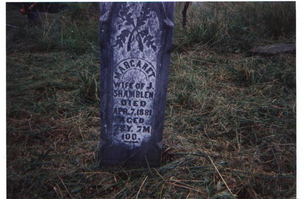

Margaret Parsons
27 August 1802 – 7 April 1871
Parsons line · Mason County, Virginia (now West Virginia); Grass Lick, Jackson County
Profile status: UNPROVED
Quick Facts
Born
27 August 1802, Harrison County, Virginia (now West Virginia) UNPROVED (CONFLICT: Geni gives about 27 August 1792, and the stone’s age math (died 7 April 1871, aged 78 years 7 months 10 days) gives about 28 August 1792; FamilySearch, Tricia’s tree and Find a Grave give 27/28 August 1802; WikiTree gives 27 August 1804. The day and month are consistent; the year is not. If 1792 is right, Margaret was born before her alleged parents’ marriage on 23 October 1804. No birth record has been found)
Died
7 April 1871, Jackson County, West Virginia UNPROVED (CONFLICT: 7 April 1871 (Geni, FamilySearch, cemetery transcription) against 14 April 1871 (WikiTree, Tricia’s tree — also her sister Barbara’s date) against 7 April 1881 (the Find a Grave stone inscription and memorial title 1802–1881). Her 1871 death is NOT in the Jackson County death register)
Married
Jesse B. Shamblin, 17 January 1822, Mason County, Virginia
DOCUMENTED (marriage; the day is 17 January — Jonathan Wright’s marriage book, page 9: “Jesse Shamblin to Margaret Parsons — Jany 17 1822”. The Mason County register’s secondary reports gave 9 January; the register film’s date column is hidden by the binder. A double wedding: George Shamblin × Barbara Ellen Parsons, 9 January 1822, Mason County)
Occupation
No occupation recorded in the research folder
Military
No military service is recorded in the research folder
Buried
Shamblin Cemetery, Kenna, Jackson County, West Virginia UNPROVED (CONFLICT: the WVGenWeb transcription places Margaret and Jesse in the Shamblin Cemetery on the Estel Simmons Farm, Kenna; Find a Grave places both at Warren Chapel Cemetery, Kenna (FG cemetery 2292528, also known as Shamblen Cemetery). The Fairplain ground (FG cemetery 2730360) holds their son George Washington and his wife Sydna Ann — not this couple)
Religion
No church affiliation found SUPPORTED (confirmed negative — no church affiliation in the research folder; the “frontier Baptist faith” is unproved lore)
Immediate Family
Parents
John Randolph Parsons Sr. × Mary Sarah Greathouse
UNPROVEDTheir place as Margaret’s parents is carried as the position in the research folder at UNPROVED — no primary record makes Margaret their daughter. The Geni profile linked here carries the vitals of the folder’s John Randolph Parsons Sr. exactly, but Margaret is NOT linked to him on Geni. Do NOT link the “John Fink Parsons” profile — that name is contradicted by the 1849 indenture. Mary Greathouse has no verified Geni ID. The full conflicts are in Research Notes, including the stepmother question: Find a Grave’s bio says Margaret’s mother was John’s unknown first wife and Mary Greathouse was her stepmother, while Geni’s About calls the Greathouse identity “chronologically impossible”.
Spouse
Jesse B. Shamblin (born about 1796, Harrison County; died 20 March 1852 — or 1853, or 1856, unresolved), married January 1822, Mason County, Virginia
DOCUMENTEDMarriage 17 January 1822, Mason County — Jonathan Wright’s marriage book, page 9: “Jesse Shamblin to Margaret Parsons — Jany 17 1822”. The Mason County register’s secondary reports gave 9 January. A double wedding with George Shamblin × Barbara Ellen Parsons, 9 January 1822.
Children
John S. Shamblin (born January 1823; married Martha Jane Rollins 1841; died 6 July 1910, Charleston, per WikiTree — obituary not found)
SUPPORTEDWilliam S. Shamblin (born about 1825; married Elizabeth Cottrell)
SUPPORTEDElizabeth M. Shamblin (born about 1825; married 1848)
SUPPORTEDNelson Wilson Shamblin (born 16 June 1831; blacksmith)
SUPPORTEDEzekiel Shamblin (17 January 1836 – 17 October 1867; married Mary Ann)
SUPPORTEDGeorge Washington Shamblin (born about August 1836; died 6 January 1905; married Sydna Ann Miller 4 November 1858)
SUPPORTEDJesse P. Shamblin Jr. (born November 1840; married Olive Jane Reed 15 December 1864)
SUPPORTEDHenry Shamblin (7 June 1842 – 31 December 1919; married Caroline Green 24 November 1861)
SUPPORTEDGeorge Washington is the direct line. The child count is unstable: FamilySearch lists a ninth, Isaac (born 1838), who is Jesse Jr.’s son, not this couple’s; Tricia’s tree lists a ninth, daughter Margaret (1834–1850, Tricia-only). The 1840 census shows three children absent by 1850, and only Elizabeth is identified. Elizabeth’s groom is carried as James J. Rollins, supported by the 1850 census household and the local history, with the index reading “Joseph M. Rollins” and the tree form “James L. Rawlings” as unresolved variants. Twins flags: William and Elizabeth (both born about 1825); Ezekiel (17 January 1836) and George (16 June 1836) — same year, different months, a possible scrambled twin birth, not proved. “Henry Clay” is tree-level — the stone says “Henry C” / “Henry G.” Family-research names James A. (born about 1831) and a daughter Margaret (born about 1834, died early 1850) appear in neither census nor Geni and are not carried as children here.
Siblings
Ballard Parsons (1803– ), George Parsons (1803– ), Barbara Parsons (1804 – 14 April 1871), Moses M. Parsons (25 February 1810 – 23 October 1880), Anna Parsons (1812 – 16 June 1877), Joshua Parsons (1814 – 7 November 1856), Martha Parsons (1816–1870), Charles Todd Parsons (1822–1889), Mary Jane Parsons (1824–1848), John R. Parsons (1829–1878)
UNPROVEDMargaret’s brothers and sisters as carried in Tricia’s tree — ten, against fifteen on FamilySearch and twelve on WikiTree. The count conflict is flagged, not settled. Tricia’s tree gives no spouses for Barbara (× George Shamblin), Anna (Garnes), Martha (Rhodes) or Mary Jane (Raines) — all present on other sites. Two 1803 boys, Ballard and George, may be twins (flag). John R. Parsons’s death is 1878 on Tricia’s tree against 1920 on Geni; Joshua’s is 1856 against 1880 on FamilySearch. The 1849 Charles Parsons heir deed lists Charles’s heirs, not John’s children — do not present it as Margaret’s siblings. None has a profile page yet, so no names are linked here.
On Family Tree Sites
Life Timeline
27 August 1802 · age 0
Born, Harrison County, Virginia UNPROVED (year conflict: 1792 Geni/stone math; 1802 FamilySearch, Tricia’s tree, Find a Grave; 1804 WikiTree)
23 October 1804
Her alleged parents John Parsons × Mary Greathouse married, St. Clairsville, Belmont County, Ohio DOCUMENTED (marriage return, signed by James Starr, J.P.; the surname Greathouse is otherwise unproved — and if Margaret was born in 1792, she predates this marriage)
17 January 1822 · age about 19
Married Jesse B. Shamblin, Mason County DOCUMENTED (marriage; the day is 17 January — Jonathan Wright’s marriage book, page 9; double wedding with George Shamblin × Barbara Ellen Parsons, 9 January 1822)
1840 · age about 38
Census, Jackson County DOCUMENTED (image read: Margaret 30–40)
22 August 1850 · age 46
Census, District 27, Jackson County DOCUMENTED (image read: Margaret, 46)
1860
Not located in the 1860 or 1870 census UNPROVED (FamilySearch lists a 22 June 1860 Jackson residence — unresolved against the folder’s searches)
7 April 1871
Died, Jackson County UNPROVED (conflict: 7 April 1871 vs 14 April 1871 vs 7 April 1881 on the stone; not in the Jackson County death register)
Burial
Shamblin Cemetery, Kenna UNPROVED (transcription places her on the Simmons Farm ground; Find a Grave places her at Warren Chapel Cemetery — conflict; see Research Notes)
Life Story
Margaret “Peggy” Parsons was born on 27 August — the day and month are consistent across every site — but the year is not: 1802 by FamilySearch, Tricia’s tree and Find a Grave, 1804 by WikiTree, and 1792 by Geni and the stone’s age math. She is carried as the daughter of John Randolph Parsons Sr. × Mary Sarah Greathouse, the position in the research folder, at UNPROVED — no primary record makes her their daughter, and the published Parsons Family Book does not list a Margaret who married Jesse Shamblin at all. Its Margaret (Peggy) Parsons, born 1784, married Joseph Bibbee — a different woman, and the two must never be merged. The birth-year conflict is the sharpest edge of the parentage question: if the stone’s 1792 is right, Margaret was born before her alleged parents’ marriage on 23 October 1804. And Find a Grave’s bio raises a stepmother question — that her mother was John’s unknown first wife and Mary Greathouse, married 1804, was her stepmother — while Geni’s About calls the Greathouse identity “chronologically impossible”.
On 17 January 1822, in Mason County, she married Jesse B. Shamblin, in a double wedding with her sister Barbara Ellen Parsons and Jesse’s brother George, eight days apart. The date is from Jonathan Wright’s own marriage book, page 9. They settled on Grass Lick in Jackson County, where Jesse was counted the first pioneer on the left fork, and raised eight children: John, William, Elizabeth, Nelson Wilson, Ezekiel, George Washington, Jesse Jr., and Henry. The 1850 census finds her at 46, in a household of seven at District 27. Her son George Washington married Sydna Ann Miller in 1858 — the direct line. She is not located in the 1860 or 1870 census.
She died on 7 April 1871, by the cemetery transcription — or 14 April 1871, by WikiTree and Tricia’s tree, her sister Barbara’s date as well — or 7 April 1881, by the stone as Find a Grave reads it. Her death is not in the Jackson County death register. Her burial is likewise unsettled: the transcription places her in the Shamblin Cemetery on the Simmons Farm at Kenna, while Find a Grave places her at Warren Chapel Cemetery. No portrait of Margaret exists, and none of Jesse either — her headstone photograph is the picture at the top of this page.
Sources and Evidence
- United States census 1850, Jackson County, Virginia, District 27 (image read): Jesse, 57, farmer; Margaret, 46; Wilson, 18, blacksmith; Ezekial, 16; George, 14; Jesse, 9; Henry, 7 DOCUMENTED
- United States census 1840, Jackson County, Virginia, reel 563, leaf n167 (image read): Margaret 30–40 DOCUMENTED
- Shamblin Cemetery transcription, Jackson County WVGenWeb (re-read in full 7 November 2026): “Shamblin, Margaret (Parsons) Died April 7, 1871 age 78-7-10. On 17 Jan 1822 married Jesse Shamblin.” SUPPORTED
- Mason County marriage register (secondary reports): Jesse Shamblin to Margaret Parsons, 9 January 1822; film 567389, image 9 shows the names but the date column is hidden by the binder SUPPORTED (secondary; the day is now settled at 17 January by the minister’s book, next item)
- Jonathan Wright’s marriage book, page 9 (FamilySearch memory 212107784, contributed by Jennifer12065; image filed in the research folder, Books & Sources): “Jesse Shamblin to Margaret Parsons — Jany 17 1822”, officiant Jonathan Wright DOCUMENTED (original entry, read at full resolution)
- Belmont County, Ohio, Marriage Record Books A & B, p. 8: John Parsons × Mary Guathouse [sic], 23 October 1804, St. Clairsville, return signed by James Starr, J.P. DOCUMENTED (primary-record surrogate; the surname Greathouse is otherwise unproved)
- Indenture, 4 January 1849, Deed Book 7, pp. 272–274: names “John Parsons and Mary his wife” among the heirs of Charles Parsons Sr.; names elder John Parsons AND John F. Parsons as two separate men DOCUMENTED
- Geni profile, read live 7 November 2026: Margaret “Peggy” Shamblin (Parsons), 6000000077523885886, born about 27 August 1792, Mason County; died about 7 April 1871; structured father John Fink Parsons (CONTRADICTED); mother Mary Sarah Parsons SUPPORTED (compiled; the father link is contradicted — see Research Notes)
- FamilySearch KJPD-GXH, read live 7 November 2026: born 27 August 1802, Harrison District, Charles City County, Virginia; died 7 April 1871; parents John Randolph Parsons 1778–1860 × Mary Sarah Greathouse 1787–1870, married 23 October 1804; 15 children including Margaret SUPPORTED
- WikiTree Parsons-43, read live 7 November 2026: born 27 August 1804, Mason, Virginia; died 14 April 1871, age 66, Kenna; daughter of John L. Parsons × Mary (Greathouse) Parsons; manager Susan Flint SUPPORTED
- Ancestry, Brewster Family Tree (tree 212654536), person 162810165577, read live 7 November 2026: no vitals; parentage unproved (potential-only); spouse Jesse Shamblin; only child linked George W. Shamblin SUPPORTED
- Find a Grave memorial 9476448, Warren Chapel Cemetery, Kenna: born 28 August 1802; died 7 April 1881 (aged 78); inscription “MARGARET / WIFE OF J. / SHAMLIN / DIED / APR. 7, 1881 / AGED / 78Y. 7M. 10D”; bio says her mother was John Parsons Sr.’s unknown first wife and Mary Greathouse was her stepmother; PHOTOS 0 SUPPORTED (memorial; the stone’s 1881 conflicts with the 1871 transcription — see Research Notes)
- Tricia’s Ancestry tree (tree 44342901), read signed in 7 November 2026: Margaret Parsons, person 6189638588, born 27 August 1802, Harrison, Virginia; died 14 April 1871; parents John Parsons 1778–1859 × Mary Greathouse 1790–1860; ten siblings; nine children; gallery EMPTY SUPPORTED (harvest; no media was filed — none is attached to any in-scope profile)
- A. C. Parsons, Parsons Family Book / Parsons Family History (c.1994, Jackson County Historical Society; FamilySearch catalog 771223): does NOT list a Margaret Parsons who married Jesse Shamblin — its Margaret (Peggy) Parsons (born 1784) married Joseph Bibbee SUPPORTED (two Margaret Parsons — do not merge)
- MyHeritage — searched signed in 7 November 2026: no Margaret Parsons in the tree (genuine negative, re-verified), no tile; Findmypast — checked signed in 7 November 2026: 129 trees for Margaret Parsons born 1802, details paywalled, no verified profile URL, no tile SUPPORTED (genuine negatives)
Grades: DOCUMENTED an original record says it · SUPPORTED several records point to it · FAMILY ACCOUNT the family’s own telling · UNPROVED a lead, not proved.
Research Notes and Open Questions
- Grades on this page: DOCUMENTED means an original record was read; SUPPORTED means a claim attested by filed research — the census images, the marriage return, the cemetery transcriptions, the signed-in tree checks — but not by an original record read here; UNPROVED means a claim carried from the research folder with no corroboration found.
- Birth conflict: 27/28 August, year unresolved — 1792 (Geni; stone age math) against 1802 (FamilySearch, Tricia’s tree, Find a Grave) against 1804 (WikiTree). If 1792 is right, Margaret was born before her alleged parents’ marriage on 23 October 1804 — that breaks the John × Mary parentage entirely. The marker photograph (now the picture at the top of this page) reads 78, not 68.
- Death conflict: 7 April 1871 (Geni, FamilySearch, cemetery transcription) against 14 April 1871 (WikiTree, Tricia’s tree — also her sister Barbara’s date) against 7 April 1881 (Find a Grave stone inscription and memorial title 1802–1881). Her 1871 death is NOT in the Jackson County death register. An old compiled account’s 1881 death year is contradicted.
- Marriage day RESOLVED: 17 January 1822 — Jonathan Wright’s marriage book, page 9, reads “Jesse Shamblin to Margaret Parsons — Jany 17 1822” (FamilySearch memory 212107784; image filed in Books & Sources). The 9 January date came from secondary reports of the Mason County register, whose film image’s date column is hidden by the binder. The double wedding with George Shamblin × Barbara Ellen Parsons, 9 January 1822, stands as reported.
- Parentage: John Randolph Parsons Sr. × Mary Sarah Greathouse are Margaret’s parents as carried in the research folder, at UNPROVED — no primary record makes Margaret their daughter. The stepmother question is open: Find a Grave’s bio says Margaret’s mother was John’s unknown first wife and Mary Greathouse (married 23 October 1804) was her stepmother; Geni’s About calls the Greathouse identity “chronologically impossible”; Tricia’s tree gives Mary Greathouse born 1790 — age 12 at Margaret’s 1802 birth. Mary’s birth is 8 March 1788 (WV Pioneers, with “?”) against 1790 (Greathouse Cousins) against 8 March 1799 (an old compiled account — impossible: age 5 at the 1804 marriage). The DAR public database gives no support for the John Parsons × Mary Greathouse line as Margaret’s parents. The three name variants — “John Fink Parsons” (Geni), “John L. Parsons” (WikiTree Parsons-50), “John Randolph Parsons Sr.” (folder, FamilySearch L7X5-G7R) — appear to be the same man, with Geni’s separate “John Parsons, Sr.” (6000000220165151863) as a duplicate. Do NOT link the “John Fink Parsons” profile (6000000001880142814) — that name is contradicted by the 1849 indenture.
- Two Margaret Parsons — do NOT merge: the published Parsons Family Book lists Margaret (Peggy) Parsons (born 1784), daughter of Charles Parsons Sr. × Elizabeth Chestnut, married to Joseph Bibbee. It does NOT list a Margaret Parsons who married Jesse Shamblin. Our Margaret is the compiled-tradition daughter of John Parsons × Mary Greathouse. Both are said to have died about 1871.
- Cemetery conflict: the WVGenWeb transcription places Margaret and Jesse in the Shamblin Cemetery on the Estel Simmons Farm, Kenna; Find a Grave places both at Warren Chapel Cemetery, Kenna (FG cemetery 2292528, also known as Shamblen Cemetery). The Fairplain ground (FG cemetery 2730360, also known as Shamblin Cemetery) holds their son George Washington and his wife Sydna Ann — not this couple.
- Child count: eight carried (the research folder; all eight attached on Geni) against nine on FamilySearch (including Isaac, born 1838 — Jesse Jr.’s son, not this couple’s) and nine on Tricia’s tree (including daughter Margaret, 1834–1850, Tricia-only). The 1840 census shows three children absent by 1850, and only Elizabeth is identified. Elizabeth’s groom is carried as James J. Rollins (SUPPORTED), with the index reading “Joseph M. Rollins” and the tree form “James L. Rawlings” as unresolved variants.
- Name forms, all unresolved, flagged here and not silently picked: “B.” vs “P.” for Jesse; “John S.” vs “John Wesley”; “Nelson Wilson” vs “Wilson B.”; “Henry Clay” vs the stone’s “Henry C” / “Henry G.”; “Jesse P.” Jr. The daughter-in-law’s name is Sydna (folder) / Sidney A Miller (Tricia) / “Sunda” (Find a Grave memorial 236479258) — Sydna Ann Miller is the form used on George Washington’s page; carry that.
- Twins flags: William and Elizabeth (both born about 1825); Ezekiel (17 January 1836) and George (16 June 1836) — same year, different months, a possible scrambled twin birth, not proved. Ballard and George Parsons, both born 1803, may be twins (flag).
- Siblings count: ten on Tricia’s tree against fifteen on FamilySearch (including Sarah Coon 1817, Susanna 1826, a second Ballard 1820, Charles Parsons 1815) and twelve on WikiTree (including Sarah Ann [half] and Susanna). No spouse links in Tricia’s tree for Barbara (× George Shamblin), Anna (Garnes), Martha (Rhodes) or Mary Jane (Raines) — all present on other sites. John R. Parsons’s death is 1878 on Tricia’s tree against 1920 on Geni; Joshua’s is 1856 against 1880 on FamilySearch.
- No portrait of Margaret exists, and none of Jesse either. Their headstones were photographed together (Find a Grave memorial 9298096, photograph by Sherry Shamblin, captioned “Grave of Jesse and Margaret Parsons Shamblin”); the photograph was cropped into his stone and her stone, each now heading that person’s page, and filed in the Drive Pictures folder with the combined photograph. The other files there are two courthouse place photos, five illustration candidates, and a farm engraving misleadingly named william-and-peggy.jpg (no people in it) — none placed.
- Open: Margaret in the 1860 and 1870 census; the 1849 Charles Parsons heir deed in full (Deed Book 7, pp. 272–274); Hardesty’s Jackson County (1883) not yet read for this couple (priority); Carder’s 1997 book (physical copy needed); the 1848 register image for Elizabeth’s groom; the Casto thread (Polly × Daniel Taylor Casto).
- Tree checks, signed in 7 November 2026: Geni (structured father John Fink Parsons — contradicted); FamilySearch (KJPD-GXH); WikiTree (Parsons-43); Ancestry (162810165577); Find a Grave (9476448); Findmypast (129 trees, paywalled); MyHeritage (genuine negative); Tricia’s tree (harvest — 25 profiles in scope, no media).